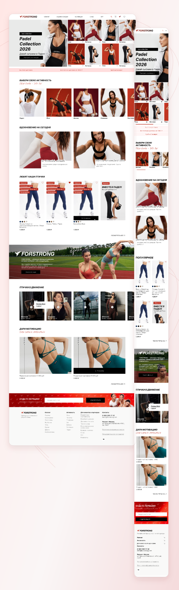
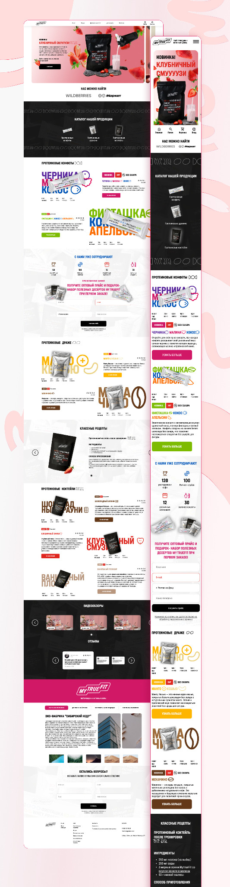
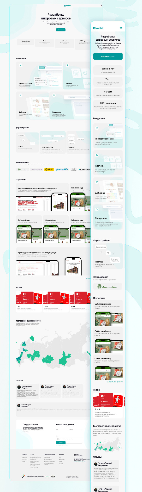
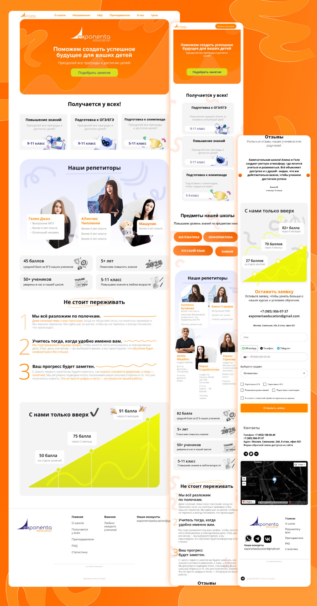
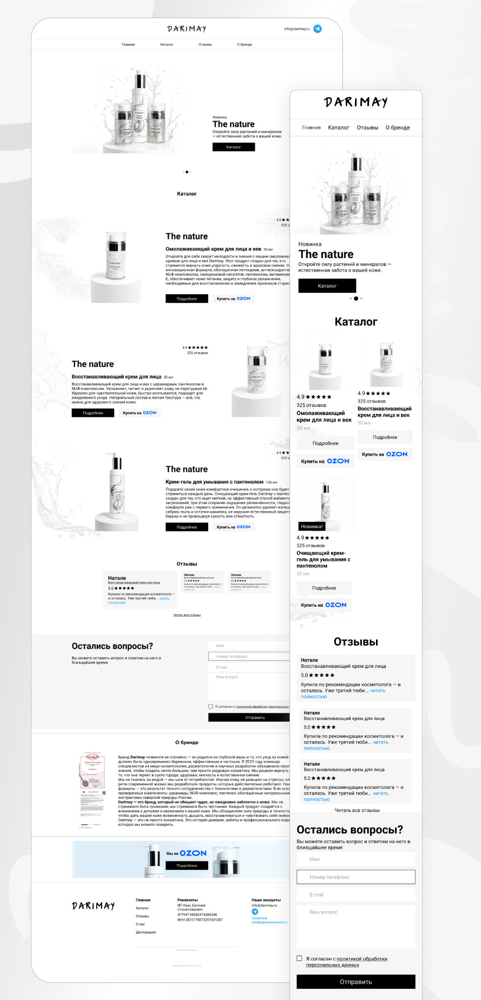
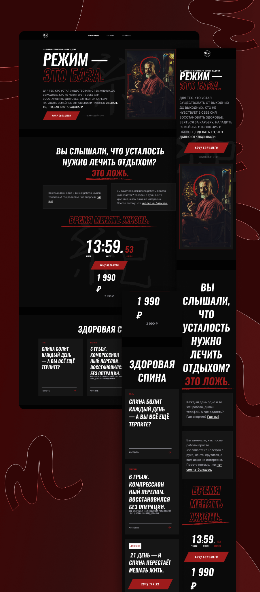

01
Сайты и веб-сервисы
От лендинга до личного кабинета: понятная структура и интерфейс под задачи продукта.
Алина Гнедова • Продуктовый и UI/UX дизайнер
3+ года создаю интерфейсы для людей и бизнеса
Я Алина, UI/UX и продуктовый дизайнер с опытом более 3 лет. Самостоятельно веду дизайн проектов от начала до конца: от структуры и визуальной концепции до готовых интерфейсов и мобильных версий. Создаю сайты, веб-сервисы и приложения, которыми удобно пользоваться.
Самые значимые проекты

Редизайн главной и карточки товара: от знакомства с коллекцией до выбора модели, цвета и размера.

Сайт с нуля для двух аудиторий: выбор протеиновых продуктов и обращение оптовых партнёров.

Сайт студии разработки: понятная подача услуг, форматов сотрудничества и портфолио.

Сайт школы на Tilda: от выбора направления и знакомства с педагогами до заявки на занятия.

Сайт-каталог косметики с нуля: знакомство с продуктами и понятный переход к покупке на Ozon.

Концепция лендинга: характер предложения через контраст, типографику и композицию.
От первой идеи до интерфейса, готового к разработке
От лендинга до личного кабинета: понятная структура и интерфейс под задачи продукта.
Сценарии и интерфейсы для iOS и Android, в которых легко разобраться с первого касания.
Найду неудобные места в существующем интерфейсе и предложу, как их улучшить.
Компоненты, состояния и правила, которые помогают продукту выглядеть целостно и развиваться.
Поэтапно, с согласованием ключевых решений
Знакомимся с продуктом, аудиторией и целью сайта. Обсуждаем, что уже есть и какой результат нужен.
Определяем страницы, функции, материалы, этапы и сроки. Фиксируем стоимость и порядок работы до старта.
Продумываю путь посетителя, содержание блоков и основные действия. Согласуем структуру и прототип перед визуальной частью.
Разрабатываю визуальное направление, затем остальные экраны и мобильную версию. Собираем обратную связь и вносим согласованные правки.
Подготавливаю макеты, компоненты и материалы для разработчика. Если проект на Tilda, отдельно согласуем сборку и публикацию.
При сопровождении разработки проверяю соответствие макетам и помогаю разобрать вопросы по интерфейсу. Объём поддержки согласуем заранее.
Сначала определяем задачу и объём, затем переходим к дизайну. Так на каждом этапе понятно, что делаем и что согласовываем.
Обсудить мой проектИщете дизайнера для своего проекта или хотите обсудить UI/UX?
Напишите мне, и мы всё обсудим!